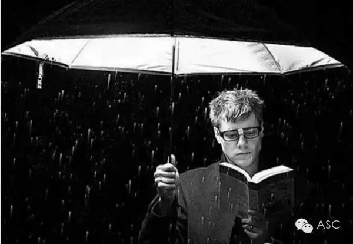

互惠动态
|
|
究竟为何出国留学？——当你归来，与众不同
很多留学生都会被问出国这些年到底学到什么，收获了什么。最重要的是英语？是文凭？其实，学到的就两样东西：一种被放到任何国家任何谁都不认识的地方都能生存下去的能力；一种名车豪宅已动摇不了愿意每天坐公车去追求简单梦想的平淡心态。这两样足以让一个人受益终身。

翻过山的人会对没有翻过山的人说，山后面不过如此。但还有很多人从没有翻过第一座山。
他们希望，获得感叹＂不过如此＂的资格。乃至，翻过山去以后，得出完全不同的结论。
留学，给了大家一个这样的机会。
你知道，有人自始至终不知道。你见到，有很多人却终其一生见不到。
留学生隔江踏海翻山而来、节日与家人相隔、自我放逐到千里之外，耗费了不小数量的金钱，到底为了什么？难道在国内就不会租房、组装家具、做饭、处理银行水电煤气账单驾车、到处和朋友游玩照相了？能有什么事是只能在国外做的呢？
就像电影霍比特人里，Gandalf 对 Bilbo Baggins所说：
The world is not in your maps and books ……When you come back, you will not be the same.
世界并不在你的地图与笔记里……当你回来时，你从此与众不同。
From Jasmine Cheung：
还有就是能够明白什么是真正的强大和平静。
为什么绕了一大圈还是毫无例外地回到了原地，为什么明明全世界最爱我们的两个人都已经在身边了，我们却还是要离开他们。所有漂泊的人不过是为了有一天能够不再漂泊，能够保护起自己的家人。只有经过这样的折腾，这样看起来的一种徒劳无功，才能明白原点是一个什么样的东西。

听过一个东北同学这么说：出国就像出柜，不出憋屈，出了后悔。
啊，当然了，我也听过很多这样的回答。不远离家，你并不知道家的好处。
都很有道理对不，确实。
我觉得出国留学的意义在于同时满足了两个叫人澎湃的梦想：「读万卷书，行万里路」。
这是我个人以为最最重要的意义是游学。
出国念书真的不仅仅是上课念书。
留学给你还有一个好东西叫做逆境教育。
接受挫折不是去接受这个世界的黑暗或者不平等。最重要的是学会自己挑战生活。
在一种机遇与挑战并存的环境中探求自己的欲望或梦想，这时候面临的逆境才可叫作逆境。
这个是单纯出国旅游学不到的。
而从国内校园跨入西方社会种种不适。在校园里，和同学相处，与教授探讨，写essay，做项目，这些过程中都能更好懂得挫折真味。工作就更不必提了。

关于互惠，您了解得够多么？
请外国学生来家庭照顾孩子，辅导孩子外语？
只了解这些是不够的！
获取更多信息请参考以下方式：
联系ASC：
电话：86-21-61116069(上海中心）
86-25-66065662（南京中心）
全国家庭均可申请！
手机：15601666586（可加微信）
Q Q：3259637585
微信：asc-center
邮箱：info@asc-center.com
网站：www.asc-aupair.com

感谢您对我们的关注